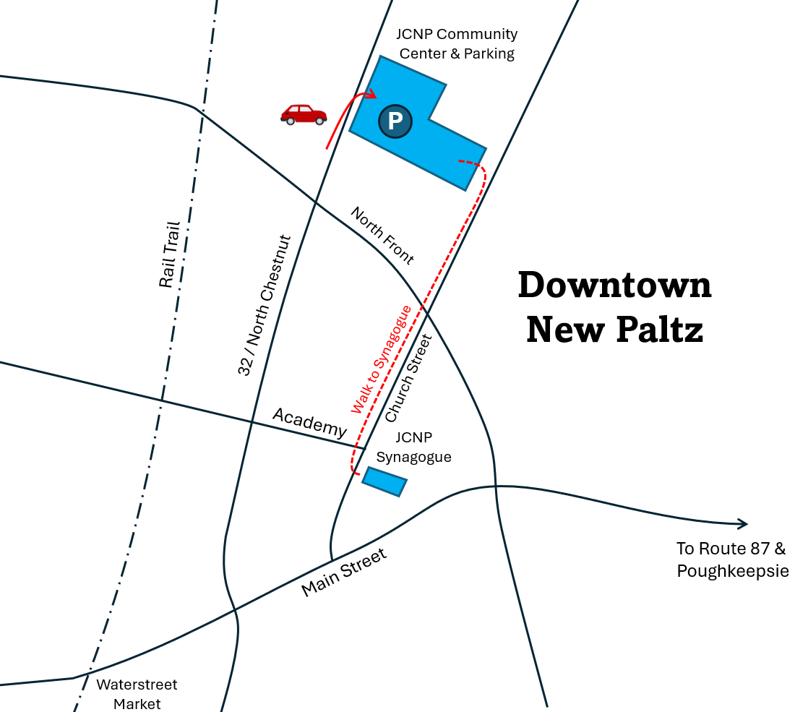
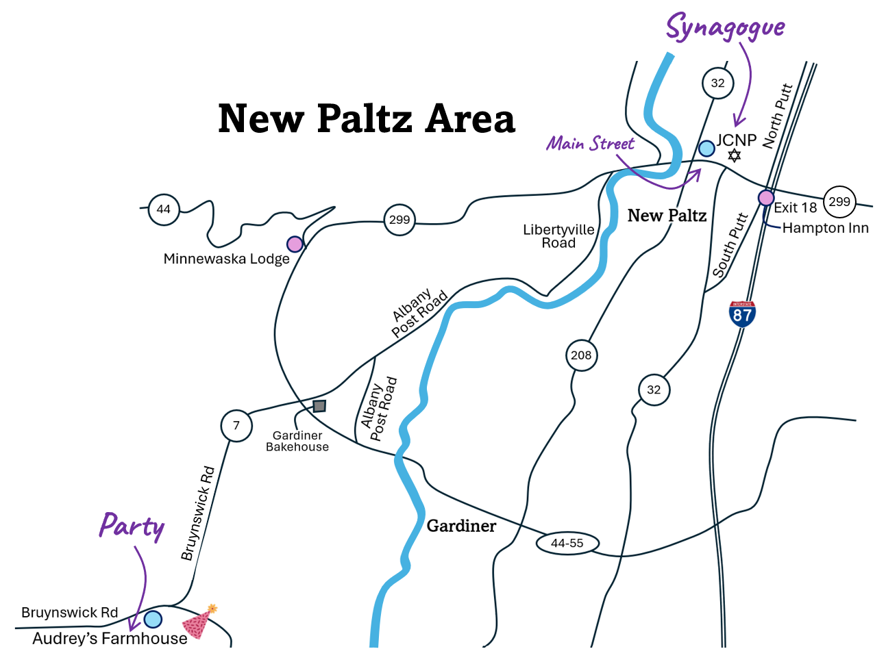

Ceremony & Celebration Details
Bat Mitzvah Ceremony
Where: Jewish Congregation of New Paltz — 8 Church St, New Paltz, NY 12561
When: March 21 at 10:00am
Parking: Two blocks away at the JCNP Community Center, 30 N Chestnut St, New Paltz, NY 12561. Those not wanting to walk are encouraged to get dropped off in front of the synagogue at 8 Church Street.
Bat Mitzvah Celebration
Where: Audrey's Farmhouse — 2187 Bruynswick Rd, Wallkill, NY 12589
When: 4:30 to 9:30pm
Sunday Farewell Brunch (for those in from out of town)
Where: Audrey's Farmhouse — 2187 Bruynswick Rd, Wallkill, NY 12589
When: 9:00am to 11:00am


Coffee & Bakeries
- Lagusta's Luscious — Amazing chocolate, coffee, and other treats.
- The Mudd Puddle Coffee Shop — Great spot at Water Street Market to grab a coffee and iconic New Paltz tees and hats.
- The Bakery in New Paltz — Grab a bite, bagel, treat, or sip.
- Gardiner Bakehouse — Amazing fresh bread, pastries, and coffee. Worth the drive.
- The Ridge Tea and Spice Shop — Extensive collection of loose-leaf teas, coffee, and unique spices.
Dining
- One With Land — Our favorite restaurant. Located near the Bat Mitzvah venue. Dinner only; reservations likely needed.
- Pitanga North — A bright and inviting spot in Gardiner. Dinner only; reservation likely needed.
- The Grazery — Cheese shop with excellent sandwiches and specialty foods.
- La Charla — Great spot for Mexican food in New Paltz. No reservation needed.
- Apizza! — Excellent New Haven style pizza and other Italian food.
- Cafe Mio — A favorite Gardiner destination for fresh, farm-to-table breakfast and lunch.
- Lola's in New Paltz — Salads and sandwiches with a fun twist, perfect for a quick delicious lunch.
- Runa — A bistro serving elevated French-inspired fare. Dinner only; reservations likely needed.
- Benton — Comfort food and great drinks in Gardiner, right next door to the Gardiner Bakehouse.
- Main Street Bistro — A New Paltz institution. Good breakfast and lunch spot.
- Bad Seed Cidery — Enjoy dry hard ciders made from apples grown right on the farm.
- Underground Ales and Coffee — A nice spot for breakfast or lunch. Good coffee and good beer.
Trails & Culture
- DIA Beacon — A world-renowned contemporary art museum housed in a massive former Nabisco factory on the Hudson River.
- The River to Ridge Trail — A scenic path connecting New Paltz directly to the base of the Shawangunk Ridge.
- The Rail Trail (New Paltz) — A flat, gravel path perfect for a stroll or bike ride with views of the Gunks.
- The Rail Trail (Gardiner) — Access the southern stretch of the trail for a quieter walk through woods.
- Minnewaska State Park — Gorgeous hiking to sky-lakes, cliffs, and waterfalls.
- Mohonk Preserve Gatehouse — Scenic and historic entry to thousands of acres of carriage roads and world-class rock climbing.
- Water Street Market — A charming shopping village with boutiques, antiques, and great views.
- Literally Books — Robin's shop! A curated bookstore nestled within Water Street Market.
- Historic Huguenot Street — Explore a National Historic Landmark District featuring 17th-century stone houses. Often called the oldest authentic street in America — not because nothing predates it, but because these original stone houses have stood in their original locations, continuously inhabited, since the early 1700s.
- Dorsky Museum of Art — Located on the SUNY New Paltz campus, showcasing a mix of Hudson Valley and global art.
- Mill Brook Preserve — A small nature preserve right in town. Great for a short hike.